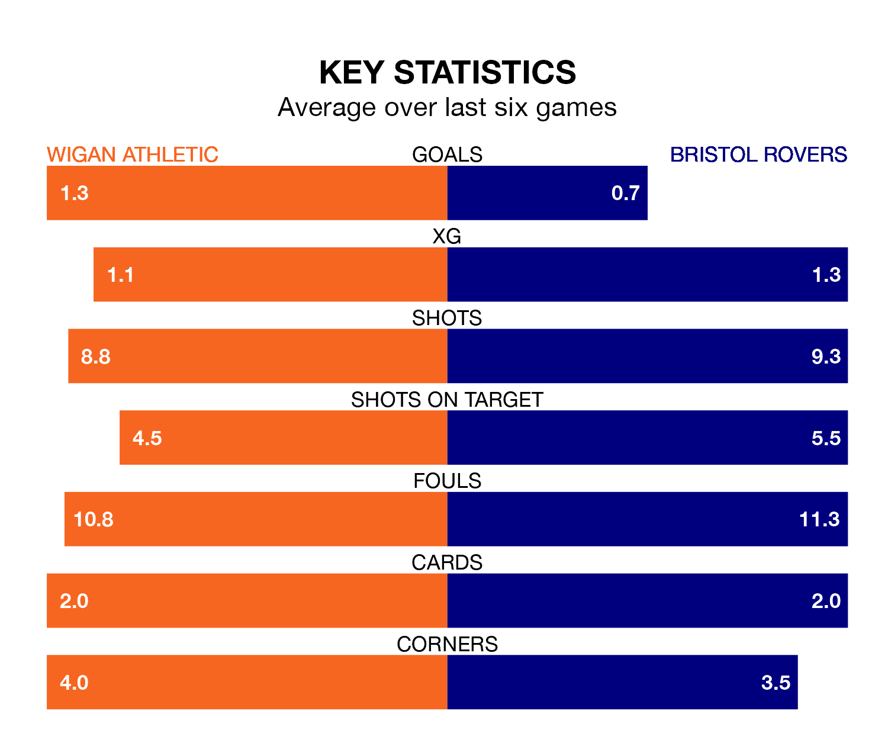

Bristol Rovers travel to Wigan Athletic on Saturday lunchtime in EFL League One.
The visitors come into the game on the back of a defeat in their last match, having lost to Peterborough United 2-0 at home.
The Latics, meanwhile, won their last match, 2-1 against Portsmouth, with their goals scored by Josh Magennis and Luke Chambers.
With 52 goals in 45 games so far this season, Rovers are scoring at below the league average rate with 1.2 goals per game. And they are conceding more than average, letting in 66 goals at a rate of 1.5 per game.
Wigan, meanwhile, are above average scorers, with 1.4 goals per game, compared to a league average of 1.3. They have conceded 1.2 goals per game.
In Chris Martin, the Gas have one of the league's sharpest shooters so far this season. He has notched 16 goals in 34 appearances, to sit fifth in the scoring charts.
His goal rate of one every 159 minutes is quicker than that of Stephen Humphrys, Athletic's top scorer with a goal every 235 minutes, and a total of nine goals in 38 games.
The Latics are in mixed form in EFL League One, with two wins and three draws from their last six games.
With two wins and a draw over that period, the away team's form is slightly worse – they have taken seven points from 18, compared to the hosts' nine.
Wigan are 10th in the table after 45 games, of which they have won 19 and drawn 10, earning 67 points.
Rovers are five places behind Wigan in 15th, with 16 wins and nine draws putting them on 57 points.
Updated: 07:59 (UTC), 26/04/24